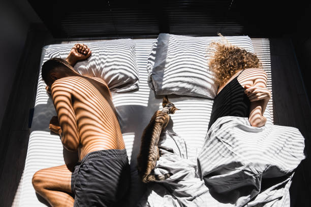
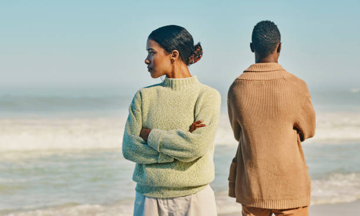

He was the kind of boy mothers warned their daughters about—rough, loud, tattooed, magnetic. A walking contradiction of charm and fury.
Travis Maddox didn’t fall in love. He fought. Literally. In underground college fights where blood hit the floor and the crowd roared his name. By day, he was a campus legend. By night, he was a storm wrapped in leather and sarcasm.
And then she walked into his world like calm before the lightning.
Abby Abernathy.
Smart, guarded, dressed in cardigans and mystery. She didn’t laugh at his jokes. She didn’t melt when he smirked. She wasn’t impressed by his fame—or his fists. And that, more than anything, made Travis Maddox take notice.
She wasn’t like the others.
She was quiet, but not soft. Strong, but secretly scarred. A girl who had left her past in Vegas and was building a life made of clean slates and second chances. She didn’t want trouble. But trouble wanted her.
They met through mutual friends. Banter sparked instantly—witty, teasing, almost dangerous. Abby rolled her eyes when Travis flirted, and Travis couldn’t help but circle her like a flame drawn to oxygen.
What started as annoyance became something else.
A bet sealed it.
If Abby lost, she’d spend a month living in Travis’s apartment. She lost.
What followed was chaos—two bedrooms, one bathroom, a million boundaries blurred. Mornings with mismatched coffee mugs. Late-night arguments that turned into laughter. Glimpses of something fragile behind Travis’s fire, and something wild behind Abby’s composure.
They were nothing alike. And yet… they were exactly what the other never knew they needed.
But love, for them, wasn’t sweet. It was turbulent. Addictive. Messy. Beautiful in the way stars are beautiful—brilliant, but capable of burning.
Abby kept her distance. Travis had a reputation. A long list of broken hearts, no room for commitment. She told herself they were just friends. But every look lingered too long. Every touch came with sparks. And when he got into a fight just for someone calling her “Pigeon”—his nickname for her—she knew she was already in too deep.
Still, she ran.
Afraid of repeating mistakes. Of losing herself. Of becoming another page in Travis’s story.
So she dated someone safe.
But Travis wasn’t the kind of storm you escape from. He stayed. He waited. He broke down in the quiet, the way boys who’ve never known love break when they finally feel it.
“I’ve never loved anyone like this,” he told her. “I didn’t even know I could.”
She came back.
But peace didn’t come easily.

Fights. Jealousy. Misunderstandings. Their love was a wildfire—consuming and breathtaking. And then, one night, in a Vegas hotel, as flames engulfed the building, they ran for their lives. And realized what they already knew:
They couldn’t live without each other.
That brush with death sharpened everything.
And in the ashes, Travis proposed.
In a tattoo parlor chapel, with a ring bought with winnings and a promise made with fire in his eyes, Abby said yes. They married in secret. No frills. Just truth.
They were two damaged people. But together, they were whole.
He called her Pigeon.
She called him home.
Their love wasn’t perfect. But it was real. Raw. Fierce.

A beautiful disaster.